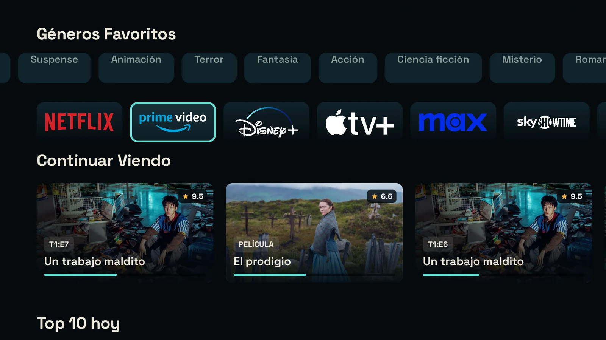
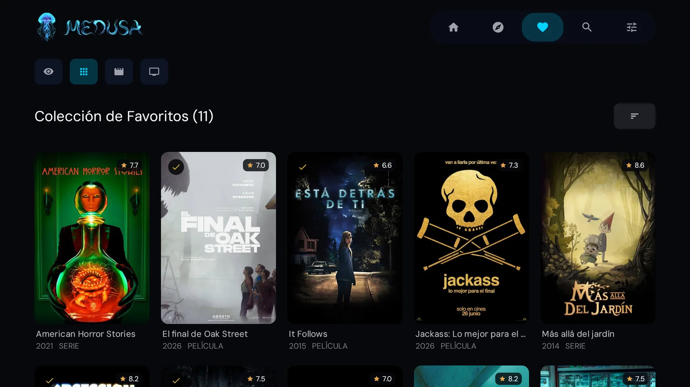
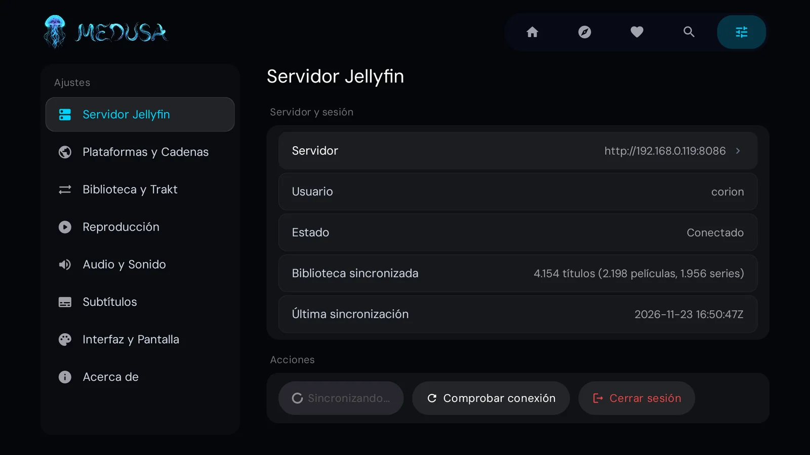
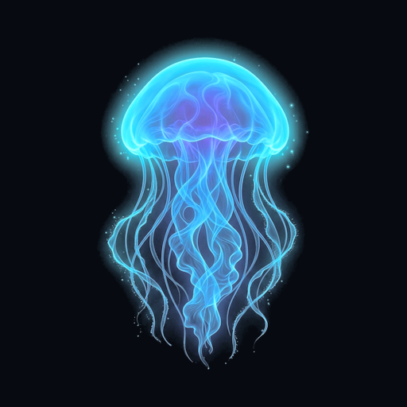

Una interfaz a tres metros.
Medusa TV convierte una biblioteca Jellyfin en un instrumento de observación. Quince mil títulos, cinco teclas y una sola luz que dice dónde estás.
- Plataforma
- Android TV y tablet
- Construida con
- Kotlin y Compose TV
- Android mínimo
- 8.0, API 26
- Biblioteca de prueba
- 15.325 títulos
Demo de foco, sin reproducción. Un anillo de 1,5 dp, sin escalar la tarjeta ni atenuar a sus vecinas.
Tres metros cambian todas las reglas.
En un salón, la tele no se mira: se habita. El pulgar tiene cinco teclas, la vista llega cansada y la pantalla compite con una lámpara encendida. Medusa se diseñó desde esa restricción, no desde una maqueta de escritorio.
A tres metros, el campo de visión útil se estrecha y el detalle se pierde. Lo que en un monitor de 27 pulgadas es un metadato discreto, en un sofá es ruido. La interfaz tiene que contestar tres preguntas sin que el usuario se acerque: dónde estoy, qué puedo hacer y qué ha cambiado.
De ahí salen las decisiones que atraviesan toda la app: arte a sangre, títulos fuera del póster, una sola acción primaria por pantalla y una corriente que subraya lo activo en lugar de rellenar bloques enteros de color.
La jerarquía importa más que la densidad. Un título grande, un dato y una acción; el resto puede esperar.
El foco es el cursor. Solo puede haber una luz encendida a la vez y siempre tiene que estar a la vista.
Sin blur en tiempo real, sin escalar tarjetas y sin animaciones autónomas. La fluidez es una decisión de diseño.
«Si un elemento no comunica foco, jerarquía o dato, se elimina.» Sistema de diseño de Medusa, 2026
El sistema cabe en una sola voz.
Space Grotesk cubre titulares, interfaz y datos. La identidad no vive en una tipografía exótica, sino en cómo se comporta la luz: una corriente turquesa que subraya lo activo y un violeta que señala lo que se sincroniza.
variable y OFL.
Una sola voz.
- Titular
- 38 sp, 700
- Sección
- 21 sp, 700
- Cuerpo
- 15 sp, 400
- 13 sp, 400
- Etiqueta
- 12 sp, 500
| Color | Muestra | Ratio |
|---|---|---|
| Pergamino | #EDE8DC | 16,3:1 |
| Corriente | #64E0D3 | 12,5:1 |
| Ámbar | #F2B441 | 10,8:1 |
| Violeta | #B9A7E3 | 9,2:1 |
| Sedimento | #8C9A96 | 6,8:1 |
| Grafito | #6E7C78 | 4,6:1 |
 Expedición: salvar nuestros mares
2026, película
Expedición: salvar nuestros mares
2026, película
Anatomía del foco
- Anillo de 1,5 dp en corriente. Un solo elemento lo lleva a la vez; el reposo no simula foco.
- El título sube de sedimento a pergamino. El contraste hace el trabajo que antes hacía un bloque relleno.
- Una corriente bajo el título. La misma gramática que marca la pestaña activa en la barra superior.
- zIndex 10 y nada más. Sin escalar la tarjeta ni atenuar a sus vecinas: se evita el temblor y se conservan los 60 fps.
Siete pantallas, una gramática.
Todas las capturas están tomadas de la app real en un televisor de 1080p, con una biblioteca de 15.325 títulos. No hay maquetas: lo que ves es lo que se renderiza.

El hero ocupa la primera pantalla completa. La navegación flota sin competir con el arte y el título del contenido manda.
- ClearLogo o Space Grotesk bold
- anillo de contacto y arcos batimétricos

El título y el año viven fuera del póster. Las plataformas usan placas discretas y las tarjetas de continuar viendo llevan su progreso en corriente.
- progreso flotante en 16:9
- Top 10 con ranking tipográfico

Filtro de formato, rail de temáticas y resultados en la misma pantalla. La corriente marca el filtro activo, no un chip relleno.
- contador y atajos de mando
- el foco no atenúa la fila

Póster a la izquierda y metadatos editoriales a la derecha. La sinopsis respira sobre el fondo; no hay panel redondeado que la encierre.
- estados de progreso y favorito
- una sola acción primaria

El teclado ocupa la mitad izquierda y los resultados aparecen sin cambiar de pantalla. Escribir no rompe el contexto.
- sugerencias predictivas
- resultados en tiempo real

Los filtros de formato y el orden viven sobre la colección, no en un menú aparte. La portada sigue siendo la protagonista.
- insignias de corazón y nota
- conteo de la colección

Barra lateral plana y grupos tipográficos. Sin tarjetas contenedoras: la corriente vertical marca el ítem activo y el estado del servidor se lee de un vistazo.
- secciones sin cajas
- sincronización y sesión visibles
Capturas tomadas el 22 de noviembre de 2026 en un televisor de 1920 × 1080, con la app v2.3.12. La biblioteca y los títulos pertenecen a sus titulares.
Lo que no se ve también es diseño.
Una interfaz fluida en un televisor de gama baja no sale del renderizado: sale de decidir qué no se dibuja. Cero blur, cero escala por tarjeta y una sola animación de entrada son decisiones de producto, no microoptimizaciones.
- Versión documentada
- 2.3.12, versionCode 1000159
- Plataforma
- Android TV, Google TV, Fire TV y tablet
- Android mínimo
- 8.0, API 26
- Lenguaje
- Kotlin 2.0.21, Compose TV y Hilt
- Reproductor
- Media3 1.5.1 y decodificador FFmpeg
- Datos
- Room 22, DataStore, Retrofit y OkHttp
- Pruebas
- 36 unitarias y 1 de migración
- Distribución
- APK firmado y OTA desde GitHub Releases
La reproducción no se rinde.
Jellyfin puede servir un archivo local, un .strm con una IP interna de Docker
o un contenedor que Media3 no abre. El orden de candidatos es explícito y nunca deja la
lista vacía.
- stream?static=trueJellyfin resuelve el .strm en el servidor. La tele nunca intenta alcanzar la IP interna del archivo.
- RemuxEl mismo endpoint sin static, cuando el contenedor lo permite.
- DirectStreamUrlLa URL que devuelve PlaybackInfo para el perfil del dispositivo.
- TranscodingUrlHLS/TS con H.264 y AAC como salida universal.
- Transcodificación completaSi todo falla, el servidor renegocia audio y versión. La app reintenta sin gastar el presupuesto de audio.
Presupuesto de rendimiento
La regla es simple: si cuesta frames, no entra. El perfil de dispositivo y el orden de candidatos están cubiertos por pruebas golden.
La identidad se decidió en una tarde.
El 22 de noviembre de 2026 la interfaz cambió de rumbo. Estos son los commits reales, con la hora y el motivo. Un estudio de diseño también es un registro de lo que se descartó.
22 de noviembre de 2026, Madrid
-
8430b41Identidad abisal
El negro digital y el cian neón se sustituyen por tinta abisal, corriente turquesa y violeta de medusa. Los neutros pasan de gris frío a pergamino y sedimento.
-
2d6958fNavegación tipográfica
Las píldoras rellenas se convierten en pestañas con una corriente bajo la activa. El foco deja de ser un bloque y pasa a ser una señal.
-
f47e297Hero batimétrico
Arcos estáticos, anillo de contacto y un solo pulso de sonar. Profundidad visual sin blur y sin coste de GPU.
-
43ab861Legibilidad en la tele real
Ajustes después de mirar la interfaz a tres metros, no en el monitor. La distancia de visionado vuelve a decidir el tamaño y el contraste.
-
886ec79De editorial a cinematográfico
Se retira Fraunces. Space Grotesk queda como única voz y el hero deja de parecer una portada de periódico. La identidad se sostiene en la estructura, no en una serif prestada.
«La medusa no vive solo en el logo; vive en la estructura.» Sistema de diseño de Medusa, 2026
Lo que queda abierto
- Tablet táctilEl modo solo iconos se pensó para un mando. Falta una pasada de objetivos táctiles y gestos para el uso con el dedo.
- Nombres heredados
TvPaletteconserva nombres comoTextSecondaryCooloFocusInkque ya no describen sus valores cálidos. - Medición de framesLa regla de cero blur está en el código y en las revisiones, pero no hay un benchmark automático de frames en CI.
Auditoría de diseño del 22 de noviembre de 2026. La deuda se declara; no se esconde en una diapositiva.

Medusa TVCliente Jellyfin para Android TVVuelve a la superficie.
Se instala desde un APK firmado. No hay Play Store, ni cuenta, ni analítica. La app se actualiza sola desde GitHub Releases y verifica el SHA-256 antes de instalar.
Instalar en la tele
- Descarga el APK en el dispositivo o envíalo por ADB con
adb install. - Permite el origen desconocido para el explorador o el receptor que use la tele.
- Abre Medusa, elige tu servidor Jellyfin y entra con tu cuenta o con Quick Connect.
Si el manifiesto de actualización no se puede verificar durante siete días, la app falla cerrada en lugar de ejecutar una versión sin comprobar.